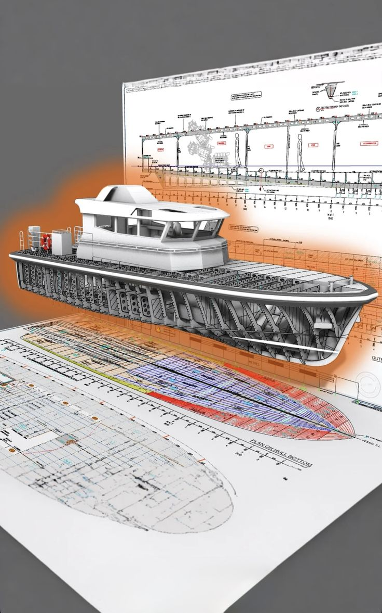
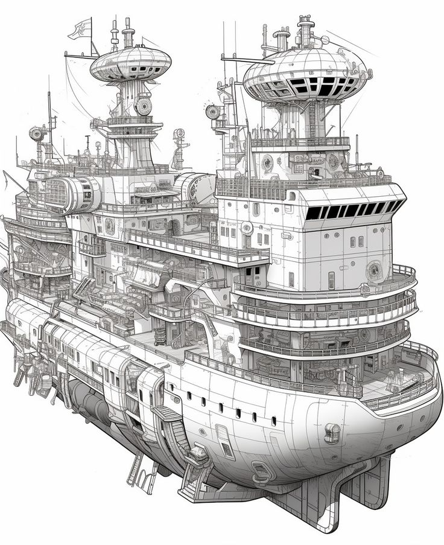

船舶从设计到运营，软件可理解为六层；同时船舶不能只按船厂自己的标准建造，还必须符合 IMO 与船级社规则。左侧切换主题阅读详细说明。
每一层回答不同问题。理想情况是数据贯通；现实中许多船厂仍存在系统割裂。
设计软件负责回答：「这艘船能不能浮？稳不稳？跑得快不快？耗油多不多？」它包括船体建模、线型设计、静水力计算、稳性计算、阻力与推进性能分析、耐波性分析、结构强度计算、疲劳寿命分析、设备布置和管路设计等。
常见国外软件包括 NAPA、Maxsurf、AVEVA Marine、Cadmatic、FORAN、ShipConstructor、CATIA 和 Siemens NX。仿真分析方面常见 ANSYS、Siemens Simcenter、STAR-CCM+、Altair 和 OpenFOAM 等。
国外软件通常拥有数十年的模型库、材料库、规则库、验证案例和全球客户反馈。国内普通船舶设计能力已较强，但在大型复杂船舶、豪华邮轮、深海装备和高端海工领域，参数化设计、多专业协同、全生命周期管理与设计可靠性仍需加强。
生产设计负责把「设计图纸」转换成船厂能够执行的制造任务。它要确定钢板如何切割、分段如何制造、管路如何安装、焊缝如何布置、设备如何吊装、电缆如何敷设，以及不同工序怎样安排。
生产设计做得不好，现场就会出现管子碰撞、设备无法安装、钢板利用率低和返工严重等问题。国内船厂拥有很强的现场经验，但不同船厂往往使用各自开发的系统，标准、接口和数据模型不统一，会造成设计重复、变更难追踪、现场信息反馈慢和不同企业之间难以协同。
PLM 负责管理船舶全生命周期的产品数据，例如图纸、模型、物料、技术文件、版本和设计变更。ERP 负责合同、财务、采购、库存、成本和供应商管理。MES 负责车间和现场执行，例如工序任务、生产进度、人员、设备、质量和报工。
理想情况下，这三类系统应该连接起来：设计变更能够自动传递到采购、生产、质量和现场。但现实中许多船厂存在系统割裂，同一设备可能有多个编码，设计图和现场状态也可能不一致。
市场真正需要的是一种船舶数字主线：设计师修改一个设备或管路后，采购清单、生产工艺、安装任务、质量文件、备件资料和后续维修记录能够自动同步更新。
船上自动化软件相当于船舶的「神经系统」，用于监控主机、发电机、配电、泵阀、舵机、推进器、液货系统和安全设备。它需要实时采集传感器数据，在异常发生时报警，并按照控制逻辑调节设备。
大型船舶通常还需要冗余控制、故障隔离、应急模式和网络安全设计。在大型船舶综合自动化、动力定位、电力推进、船桥集成、实时控制器和高可靠冗余系统方面，国外企业积累更深。这类系统必须长时间稳定运行，还要通过严格认证，替换成本很高，因此客户通常更看重可靠性和历史案例，而不仅仅是采购价格。
船队管理软件服务船东和运营公司，主要处理船期、航线、配载、船员、维修、备件、油耗、碳排放和法规合规。
这类软件越来越依赖实时数据。船东希望知道每艘船当前的油耗、发动机状态、航速效率、维修风险和预计到港时间。运营软件的价值，往往体现在「少停一天航、少烧一吨油、少交一笔合规罚金」这类可量化结果上。
新一代软件会将设计模型、传感器数据、维修记录、航行数据和环境数据结合起来，形成船舶数字孪生。它可以用来模拟船舶不同工况，预测设备故障，优化航线和速度，估算碳排放，分析新燃料风险，并支持船岸协同。
需要注意：很多数字孪生项目拥有漂亮的三维界面，但三维模型和真实设备数据、维修记录、运行模型之间没有完全联动。真正有价值的数字孪生应该能够支持预测、诊断、模拟改造方案和运营决策，而不仅仅是展示船舶外观和设备位置。


设计变更自动传递到采购、生产、质量与现场；同一设备一个编码；图模与现场状态一致；跨企业也能交换结构化数据。
即使是大型国际供应商，也很难让设计软件、仿真软件、船厂生产系统、船上控制系统和船队运营平台完全无缝连接。船东和船厂经常需要依靠系统集成商进行数据转换，因此跨平台、跨品牌、跨生命周期的数据协同仍然是全球性空白。
船舶不能只按照船厂自己的标准建造。没有船级社证书，船舶通常很难获得保险、融资和国际运营资格。
IMO 主要制定全球海上安全、环保、人员培训和防污染规则。重要法规包括：
此外，人员培训（如 STCW）、碳排放与能效规则、FuelEU Maritime、区域碳市场等，正在把「合规」从一次性取证变成贯穿运营期的持续成本与决策变量。
船级社会审核船体结构、稳性、消防、救生、主机、电气、自动化、材料、焊接、新燃料和网络安全等内容。它既是技术标准的解释者与执行者，也是保险、融资与国际航行信任链中的关键一环。
对软件与自动化供应商而言，通过船级社认证往往比「功能演示成功」更关键：客户替换成本高，更愿意选择有长期入级案例的产品。
| 船级社 | 简称 | 学习时记住什么 |
|---|---|---|
| 中国船级社 | CCS | 国内入级与本土项目常见 |
| 挪威船级社 | DNV | 规则、数据服务、绿色与数字议题活跃 |
| 美国船级社 | ABS | 美洲市场与部分海工关联 |
| 英国劳氏 | LR | 历史悠久，合规认证体系成熟 |
| 法国船级社 | BV | 欧洲与特种领域常见 |
| 日本海事协会 | ClassNK | 东亚航运造船联系密切 |